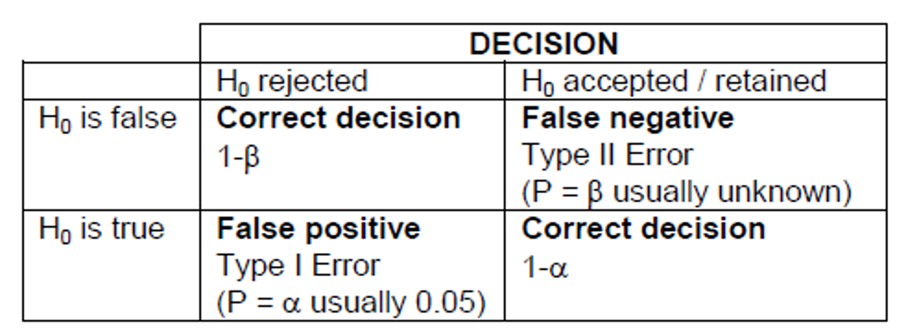

Now we are going to take the next step into the world of inferential statistics
This is an important and sometimes difficult step in statistics
We are going to draw conclusions about a population from a “smaller” sample of that population
Hypothesis testing
A hypothesis consists either of a suggested explanation for a phenomenon or of a reasoned proposal suggesting possible relationships between multiple phenomena
Why?
To make evidence based decisions, we need to evaluate the evidence
Hypothesis testing is a scientific method for weighing up the evidence given the data against the given hypothesis (model)
Evidence?
The data is not consistent with the hypothesis of the gap between the observed value (data) and the expected value is too big (> 2 or 3 Standard Errors)
Hypothesis testing
Framework
Null Hypothesis (H0) vs Alternative Hypothesis (H1)
Is the data consistent with H0? Wait, but I’m interested in if there is a difference?
Falsifiability: only takes one contrary observation to falsify a statement (Karl Popper)
Can we falsify this statement? “There are invisible and undetectable fairies in my garden.” - it is non-falsifiable so we cannot test it with empirical data.
Can we falsify this statement? “All swans are black” - if we observe a single white swan, then the statement is falsified.
generated by DALL-E 3
Hypothesis testing
Underwood, A.J., 2009, April. Components of design in ecological field experiments. In Annales Zoologici Fennici (Vol. 46, No. 2, pp. 93-111). Finnish Zoological and Botanical Publishing Board.
Hypothesis testing
We will follow the steps in hypothesis testing
Choose level of significance (usually 0.05)
Write null and alternate hypotheses
Check assumptions
Calculate test statistic
Obtain P-value or critical value
Make statistical conclusion
Write a scientific (biological) conclusion
Hypothesis testing
Acronyms
Sometimes we use HATPC to remember these steps - HAT Prevent Cancer - come up with your own
H: Hypothesis
A: Assumptions
T: Test statistic
P: P-Value
C: Conclusion
Hypothesis (H)
The null hypothesis\((H_0)\) assumes that the difference between the observation (data) and the expected value is due to chance
The alternative hypothesis\((H_1)\) assumes that the difference between the observed value (data) and expected value is NOT due to chance alone.
Assumptions (A)
We need to check the assumptions of the test we are using.
For example, if we are using a one sample t-test we need to check the assumption of normality.
This is done by 1) looking at the distribution of our data (EDA) and 2) using a hypothesis test such as the Shapiro-Wilk test.
If the assumptions are not met, we may need to transform the data or use a non-parametric test.
Test Statistic (T)
Measures the difference between what is observed in the data and what is expected from the null hypothesis.
\(\text{Test statistic}=\frac{\text{Observed value - Expected value}}{\text{Standard error}}\)
P-Value (P)
What is P-value?
The P-value is a way of weighing up whether the sample (data) is consistent with \(H_0\)
More formally:
The P-value is the chance of observing the test statistic (or something more extreme) if the \(H_0\) is true.
P-Value (P)
What does this have to do with sampling distributions??
P-Value (P)
“If the P-value is low the Null hypothesis must go.”
So we calculate the P-value to assess the level of evidence against the Null hypothesis.
Generally if a P-value > 0.05 we say there is no strong evidence to reject the null hypothesis (we fail to reject it)
We never say we accept the null hypothesis!!
0.05 is called the significance level
We may choose other significance levels such as 0.2, 0.01, 0.001 (for this course we will use 0.05)
P-Value (P)
Common mistakes
The p-value is not the chance that the NULL hypothesis is true
A large p-value does not mean that \(H_0\) is true
The use of 0.05 is not mandatory, it is a convention.
Should we move away from an over reliance on p-values towards more robust statistical methods and a greater emphasis on the size and reproducibility of effects?
Look up terms like “P Hacking”…
A little more on the P-value
Why is the p-value 0.05?
The p-value is the probability of observing a test statistic as extreme as the one calculated, assuming the null hypothesis is true.
It is based on the idea we 1 in 20 times we will reject the null hypothesis when it is true.
Conclusion (C)
We make a statistical conclusion based on the p-value and the level of significance.
We also make a scientific (biological) conclusion based on the statistical conclusion.
Tails
Tails??
In this course we will mostly use two-tailed tests because we are interested in whether the observed value is different to the expected value.
One tailed tests are used when we are specifically interested in whether the observed value is greater or less than the expected value. Examples are in quality control and production processes.
Tails
Let say we would like to test whether a sample or population behaves according to a known or expected value. For example, ENVX1002 students have a mean heart rate of 70 beats per minute \((c)\). We could test the relationship between our population or sample mean \((\mu)\) or \((y)\) and our expected mean \((c)\).
\(H_0:\mu=c\)Two tailed
\(H_1:\mu \ne c\)Two tailed
\(H_0:\mu \ge c\)One tailed - greater than
\(H_1:\mu < c\)One tailed - greater than
\(H_0:\mu \le c\)One tailed - less than
\(H_1:\mu > c\)One tailed - less than
We usually use the first (two tailed) form unless we are specifically interested in testing whether the difference is in one direction or the means of two variables are equivalent (i.e. equivalence testing in production)
In this course we are assuming that the population/sample is normally distributed.
Type error??
Type I error
False positive: we reject H0 when it is true
Type II error
False negative: we accept H0 when it is false

Note: Decreasing the significance level (\(\alpha\)) to say 0.01 will increase the probability of type II error
Sample size and power
Sample size & Power
While we won’t do these calculations, it is important to think about sample size and power. For example, when comparing two means we can estimate the sample size required using the following
\(n\) represents the required sample size for each group.
\(Z_{\alpha/2}\) denotes the critical value of the normal distribution at the desired significance level (\(\alpha\)). For example, for a 95% confidence level (\(\alpha = 0.05\),\(Z_{\alpha/2}=1.96\).
\(Z_{\beta}\) is the Z-score corresponding to the desired power of the test \((1 - \beta)\). For 80% power \((\beta=0.2)\), you would use the Z-score that corresponds to 80% in the normal distribution table.
\(SD_1\) and \(SD_2\) are the standard deviations of the two groups being compared.
\(\delta\) is the minimum difference in means between the two groups that the study is designed to detect, also known as the effect size.
Sample size and power
Sample size & Power
In a nut shell…
High Power: If a test has high power (close to 1), it means that the probability of committing a Type II error is low. This indicates that the test is very likely to detect an effect or difference when one exists.
Low Power: Conversely, if a test has low power, the probability of committing a Type II error is high. This means the test is less likely to detect an effect or difference, even if one exists.
Sample size: Generally power increases as sample size increases, but so does time and costs!
The t-distribution and degrees of freedom?
The T-distribution has the following properties:
It is bell-shaped, symmetrical about the mean, median and mode, which are all of equal value. [It is a little flatter than the normal distribution.]
The area under the curve = 1, as is the case for all continuous probability distributions.
The probability density function is defined by three parameters, the mean \(\mu\), the standard deviation \(\sigma\) and the sample size \(n\).
The exact shape of the t distribution depends on the quantity called degrees of freedom, df. The df = n – 1 for any t distribution.
Comparing the shapes of the Student’s T and the Z (normal) curve
Example 1: One sample t-test
Generated using DALL.E 3
Hypothesis
Say our hippie friend here has seen the light after a helping of mung beans and wishes to test whether ENVX1002 student average heart rates differ from the global average of 70 bpm (beats per minute).
State the Null and Alternate hypothesis!
\(H_0=70 \text{ bpm}\) (Null hypothesis)
\(H_1 \ne 70 \text{ bpm}\) (Alternate hypothesis)
Example 1: One sample t-test
Assumptions
This time we are testing a data set where the variance is unknown.
A key assumption for the one-sample t-test is that the sample is “reasonably” normally distributed.
Why do we need to test the assumption of normality?
Think about if our distribution is right skewed, then our mean may not reflect the central tendency of our sample population.
Example 1: One sample t-test
Assumptions
Small Samples: With small samples (typically n < 30), even slight deviations from normality can significantly impact the t-test’s validity because the t-test relies heavily on the assumption of normality in this scenario. However, if the data are symmetrically distributed and don’t have outliers, the t-test can be robust to mild violations of normality. Note that the t-test adjusts for the sample size, so the larger the sample, the less important the normality assumption becomes.
Large Samples: For larger samples (n > 30), the Central Limit Theorem (CLT) suggests that the distribution of the sample means tends to be normal, regardless of the population distribution. This means that for sufficiently large samples, the t-test can be robust to violations of normality. However, extreme skewness, heavy tails, or outliers can still affect the test’s performance.
Example 1: One sample t-test
Assumptions
Code
library(ggplot2)# Assuming 'skewed_sample' is your skewed data. For this example, let's simulate itset.seed(0) # For reproducibilityskewed_sample <-rlnorm(100, meanlog =0, sdlog =1) -exp(0.5) # Skewed data, centered around 0# Create a data frame for ggplotdata <-data.frame(value = skewed_sample)# Plotp <-ggplot(data, aes(x = value)) +geom_histogram(aes(y = ..density..), binwidth =0.5, fill ="lightgreen", alpha =0.7) +stat_function(fun = dnorm, args =list(mean =0, sd =1), color ="red", linetype ="dashed") +labs(title ="Skewed Distributed Sample", x ="Value", y ="Density") +theme_minimal() +geom_vline(aes(xintercept =mean(value)), color ="blue", linetype ="dotted") +annotate("text", x =mean(skewed_sample), y =0.35, label =paste("Mean:", round(mean(skewed_sample), 2)), vjust =-0.5)
Code
print(p)
Example 1: One sample t-test
Assumptions
Let’s help out our hippie friend: We have asked students to measure their heart rate and randomly selected heart rates from 21 students (a completely randomised design) in our hippie friends ENVX1002 class. Note we will do this exercise in class!!
Code
set.seed(1234)heart_rate <-rnorm(21, mean =70, sd =10)
We have a small sample size so often we use a stem plot or box plot to look at the distribution. Both look quite symmetrical!
Code
stem(heart_rate)
The decimal point is 1 digit(s) to the right of the |
4 | 7
5 | 8
6 | 01122445559
7 | 11345
8 | 01
9 | 4
Code
boxplot(heart_rate)
Example 1: One sample t-test
Assumptions
We can also look at the 6 number summary and the histogram. The histogram looks quite symmetrical and the 6 number summary is quite symmetrical.
Code
summary(heart_rate)
Min. 1st Qu. Median Mean 3rd Qu. Max.
46.54 61.63 64.89 67.68 72.77 94.16
We can see that the mean and the median are quite similar. This is a good sign that the data is symmetrical and perhaps normally distributed.
We can also start to think how our student heart rate compares to the national average of 70 bpm.
Example: One sample t-test
Assumptions
We can also use a hypothesis test called the Shapiro Test and use a plot called a qqplot (“Quantile Quantile plot”).
We can see that the p-value of the shapiro test > 0.05 - no strong evidence that the distribution is not normal.
We can see that the points on the Q-Q plot are reasonably straight and follow the “line”.
Code
shapiro.test(heart_rate)
Shapiro-Wilk normality test
data: heart_rate
W = 0.94441, p-value = 0.266
library(ggpubr)ggqqplot(heart_rate, main ="Q-Q Plot using ggpubr",color ="blue")
Example 1: One sample t-test
Test statistic
t-test
The formula is the same as the z-test but we use the t-distribution instead of the normal distribution and we use the sample standard deviation instead of the population standard deviation.
One Sample t-test
data: heart_rate
t = -1.0736, df = 20, p-value = 0.2958
alternative hypothesis: true mean is not equal to 70
95 percent confidence interval:
63.16242 72.19073
sample estimates:
mean of x
67.67657
We can see the following output:
the t-statistic = -1.0736
the degrees of freedom = 20 \((n-1)\)
the p-value = 0.2958
the 95% confidence interval = (63.16242 72.19073)
the sample mean = 67.67657
Example 1: One sample t-test
Conclusion
Ceated using DALL.E 3
Let’s revisit our hippie friend’s hypothesis
\(H_0=70 \text{ bpm}\) (Null hypothesis)
\(H_1 \ne 70 \text{ bpm}\) (Alternate hypothesis)
The p-value is 0.2958 which is not less than 0.05. We retain null hypothesis.
There is no strong evidence to indicate that the mean heart rate of ENVX1002 students is different to the global mean of 70 bpm. We can be 95% confident that the true mean heart rate of 63 and 72 (0 d.p.) beats per minute. Our global mean lies within this interval. Therefore we are petty confident that the class average heart rate is similar to the global average.
Confidence intervals
A confidence interval is a range of values, derived from a sample, that is likely to contain the value of an unknown population parameter.
Confidence are important and many people prefer them to formal hypothesis tests because they give a range of values rather than a single value.
There are two types we are going to look at:
Confidence interval where we know the population variance
Confidence interval where we do not know the population variance
Confidence intervals - known variance
Assuming our sample comes from a normal population, we can calculate the confidence interval for the mean of a population when the population variance is known. An example may be in manufacturing where we know the variance of a process.
for the 95% confidence interval, \(\alpha = 0.05\) and \(Z_{\alpha/2} = 1.96\) i.e. 2 standard errors from the mean.
Confidence intervals - known variance
\(\bar y\) is a random variable with a sampling distribution.
Because there is an infinite number of values of \(\bar y\), there is an infinite number of intervals of the form \(CI = \bar{y} \pm 1.96 \cdot \frac{\sigma}{\sqrt{n}}\).
The probability statement says that 95% of these intervals will actually include \(\mu\) between the limits.
For any one interval, \(CI = \bar{y} \pm 1.96 \cdot \frac{\sigma}{\sqrt{n}}\), we say that we are 95% confident that \(\mu\) lies between these limits.
Confidence intervals - known variance
Example
Say we have measured the weights of 6 chocolate bars from Florry’s chocolate factory. The readings were:
48 43 45 51 49 40
The mean for these six values is \(\bar y = 46\)g. Let’s assume that the bar weights follow a normal distribution and that \(\sigma = 1\)g These assumptions allow us to calculate a 95% z-based confidence interval:
So the 95% CI for the current example is
\(CI = 46 \pm 1.96 \cdot \frac{1}{\sqrt{6}}\) or \(CI = 46 \pm 0.80\) or \(CI = (45.20, 46.80)\)
So we are 95% confident that the true mean weight of the chocolate bars is between 45.20 and 46.80g.
We will calculate confidence intervals with unknown variance in later on.
Confidence intervals - Unknown variance
We can also calculate a confidence interval when we do not know the population variance.
The formula for the confidence interval is: \(CI = \bar{y} \pm t_{\alpha/2} \cdot \frac{s}{\sqrt{n}}\)
For the 95% confidence interval, \(\alpha = 0.05\) and \(t_{\alpha/2} = 2.093\) (for 20 degrees of freedom)
The degrees of freedom is \(n-1\)
Code
qt(0.975, df =20)
[1] 2.085963
Confidence intervals - Unknown variance
Another interesting result to contemplate can be demonstrated through the following simulation of 100 studies, each containing n = 6 observations of a fictitious toxic substance concentration (\(\mu g / l\)) assumed to be \(\sim N(0.3, 0.12)\). For each sample the 95% confidence interval calculated:
Depiction of confidence intervals from each of 100 simulated samples
Confidence intervals - Unknown variance
Approximately 95% of these simulated samples have a confidence interval that includes the true value of 0.3 (\(\mu g / l\)). In the graph above, a confidence interval includes the true mean value of 0.3 if the vertical line (representing the width of the CI) crosses the horizontal line.
We have to accept that 5% of the time we will not capture the true mean.
We can widen the confidence interval to 99% so we are more confident but this can increase the chance of a type II error.
Example 2: One sample test
What happens when the assumptions are not met?
We can try and transform the data to make it more normal (and equal variance for later)
We can use a non-parametric test (later)
Example 2: Data transformations
My data is not normal :( what can I do? - Sometimes we can transform our data to make it more normal. - Let’s look at an example: - Total nitrogen (TN) levels @ Wallacia in western Sydney on the Nepean River - According to the ANZECC guidelines, the maximum acceptable level of TN in an lowland river is 500 \(\mu g/L\) and for an upland river = 250 \(\mu g/l\). (see Table 3.3.2 in Australian and New Zealand Guidelines for Fresh and Marine Water Quality)
Code
TN <-read.csv("data/TN_Wallacia.csv")str(TN)
'data.frame': 29 obs. of 1 variable:
$ TN: int 1020 1120 1170 920 920 1010 850 910 800 710 ...
Code
mean(TN$TN, na.rm =TRUE) # na.rm=TRUE if we have missing values
# Arrange the plots in a 2x2 layoutgrid.arrange(p1, p2, p3, ncol =2)
Example 2: Check assumptions
Shapiro-Wilk normality test
For smaller sample sizes, use the Shapiro-Wilk test (say < 50)
Code
shapiro.test(TN$TN)
Shapiro-Wilk normality test
data: TN$TN
W = 0.92582, p-value = 0.04293
We see P<0.05 so we reject the null hypothesis that the data is normally distributed.
For really large samples (>>30) the central limit theorem suggests that the distribution of the sample means tends to be normal, regardless of the population distribution. This means that for sufficiently large samples, the t-test can be robust to violations of normality. However, extreme skewness, heavy tails, or outliers can still affect the test’s performance.
Example 2: Transformations
For right (positive) skewed data, we can use a
\(1/x\) inverse transformation for highly skewed data.
\(\log_{10}\) or \(\log_e\) transformation for very skewed data.
\(\sqrt{}\) square root transformation for moderately skewed data.
For left (negative) skewed data (which is rare to find), we can “try” a
\(x^2\) or \(x^3\) transformation.
Example 2: Transformations & Recheck assumptions
Code
# Let's try a log10 transformation# We start by creating a new column in our data frame called log10_TN# We then take the log10 of the TN column and store it in the new columnTN$log10_TN <-log10(TN$TN)
Geometric mean
Note that now we are looking at the geometric mean as opposed the the arithmatic mean which was 855.86 in our case
One Sample t-test
data: TN$log10_TN
t = 4.8768, df = 28, p-value = 3.884e-05
alternative hypothesis: true mean is not equal to 2.69897
95 percent confidence interval:
2.807748 2.965309
sample estimates:
mean of x
2.886528
The p-value is <0.001 (3.d.p.) which is less than 0.05. Therefore, we reject the null hypothesis.
There is strong evidence that the mean value of TN in Nepean River is different to 500 ug/L.
Can we say something about the direction??
Example 2: Confidence intervals
We need to back transform the confidence interval to the original scale.
To back-transform the confidence interval we can use the following:
\(10^{CI_{low}}\) and \(10^{CI_{high}}\)
Code
10^(2.81)
[1] 645.6542
Code
10^(2.97)
[1] 933.2543
This means that we are 95% confident that the geometric mean (back-transformed mean) of the sample is between approximately 646 and 933 ug/l. This is higher than the hypothesised mean.
Example 2: Conclusion
The data was log10 transformed to meet the assumptions of the t-test.
We have strong evidence that the mean value of Total Nitrogen in Nepean River is different to 500 ug/L.
We are 95% confident that the geometric mean (back-transformed mean) of the sample is between approximately 646 and 933 ug/l.
Looking at the confidence interval, we can say that the mean value of TN in Nepean River is significantly greater than 500 ug/L.
Example 3: One tailed test
We can also use a one tailed test if we are specifically interested in whether the observed value is greater or less than the expected value.
In this case we only want to know if the TN concentration is greater than the ANZECC guidelines of 500 \(\mu g/l\).
One Sample t-test
data: TN$log10_TN
t = 4.8768, df = 28, p-value = 1.942e-05
alternative hypothesis: true mean is greater than 2.69897
95 percent confidence interval:
2.821104 Inf
sample estimates:
mean of x
2.886528
P < 0.001 (3.d.p.) so we reject the null hypothesis.
Because we are doing a one tailed test we can now conclude that the mean value of TN in Nepean River is greater than 500 ug/L.
Take a look at the confidence interval and the p-value. What do you notice when comparing to the two tailed test?